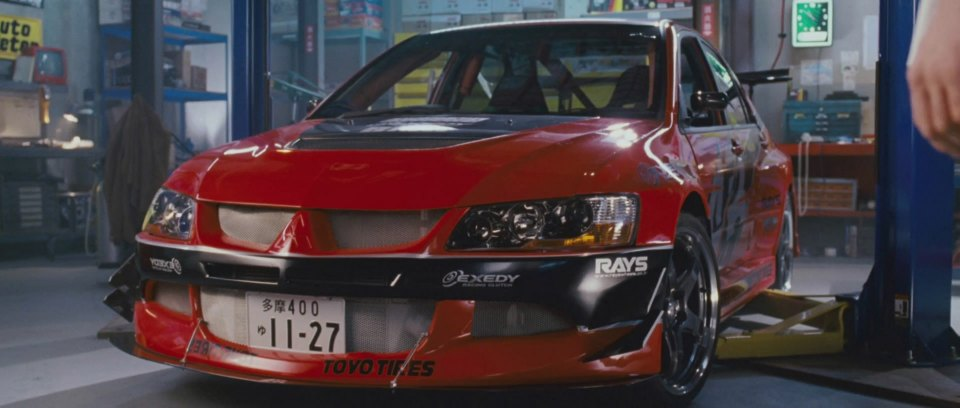

Mitsubishi Lancer Evolution IX поступил в продажу в Японии 3 марта 2005. Двухлитровый двигатель 4G63 имел технологию MIVEC(Применение MIVEC позволило увеличить мощность двигателя со 145 л.с.до 175 л.с.) и доработанную турбину, в результате модернизации мощность двигателя возросла до 291 л.с.
Mitsubishi Lancer тоже участвовал в филме форсаж